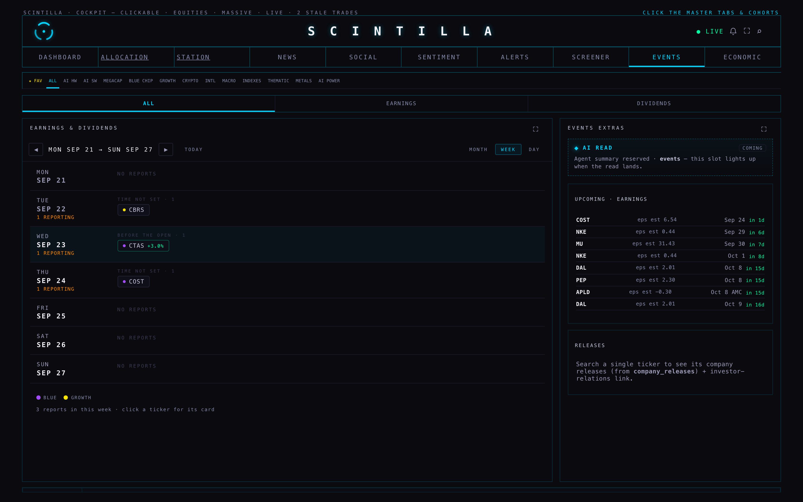
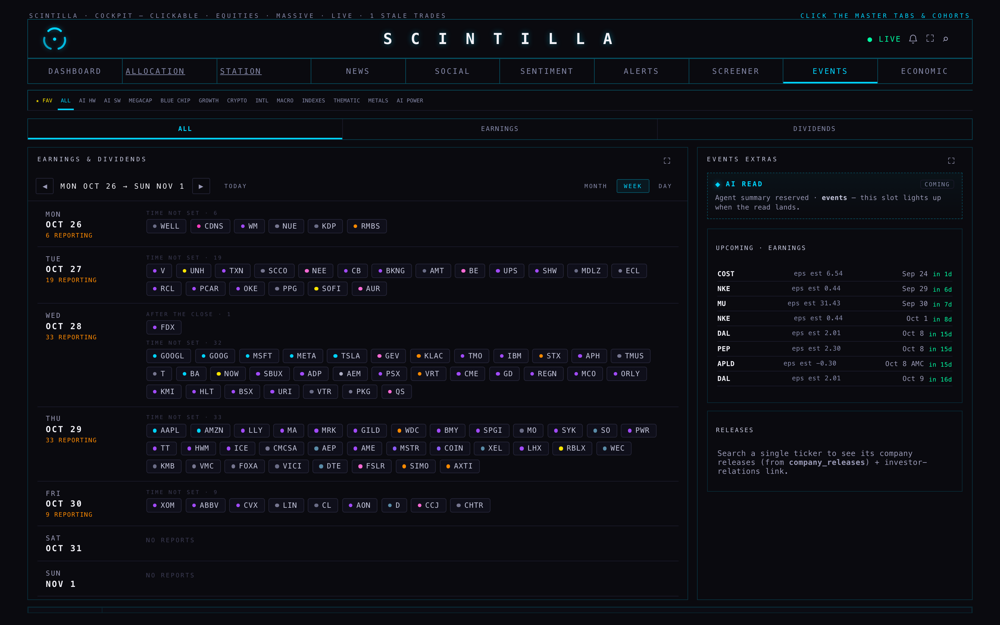
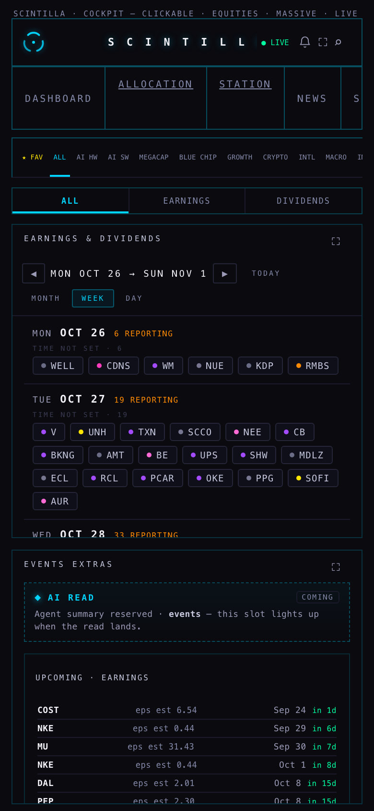
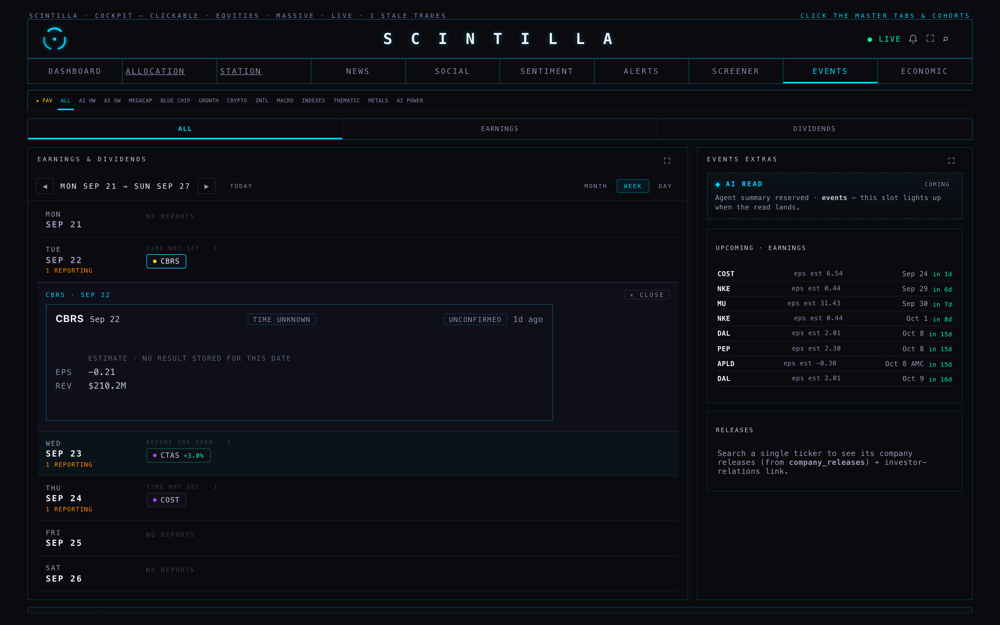
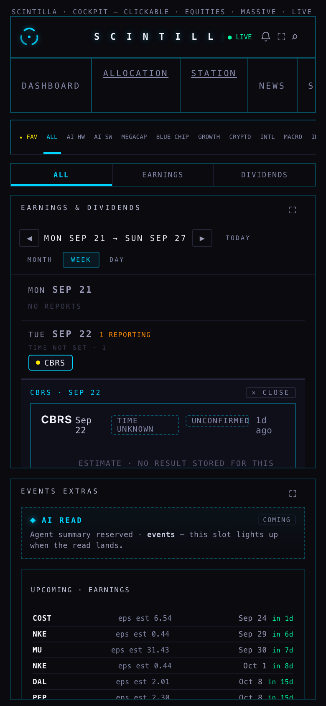
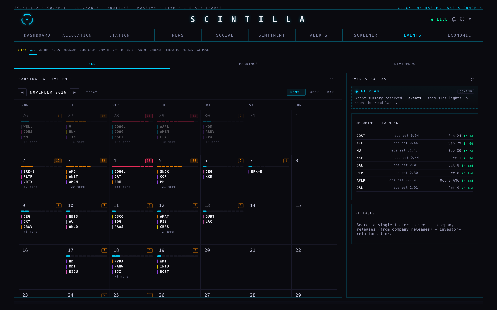
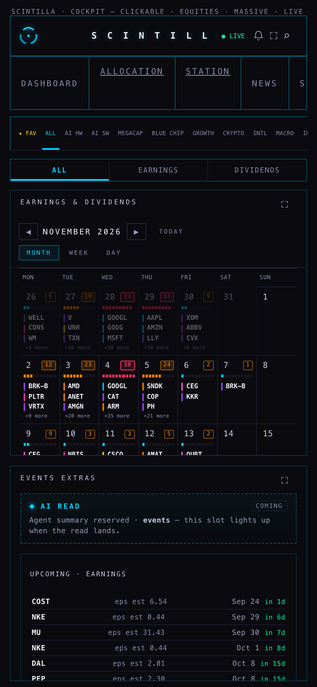
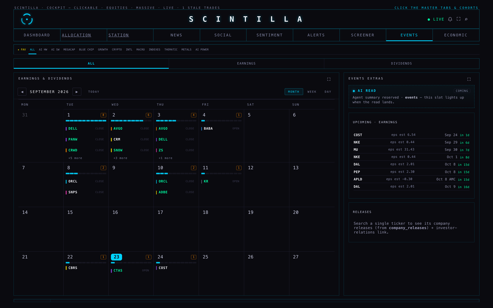
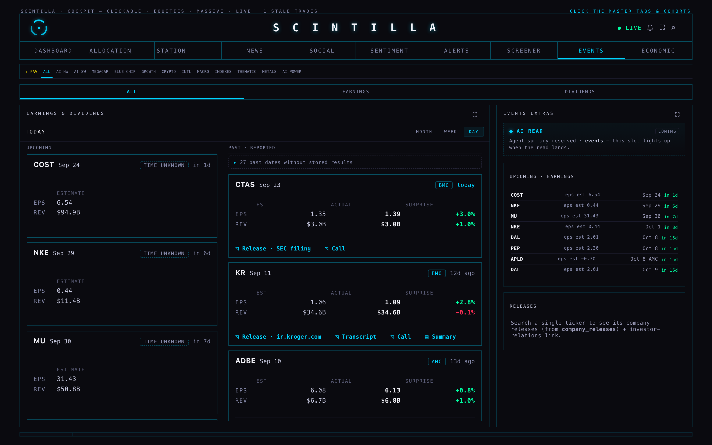
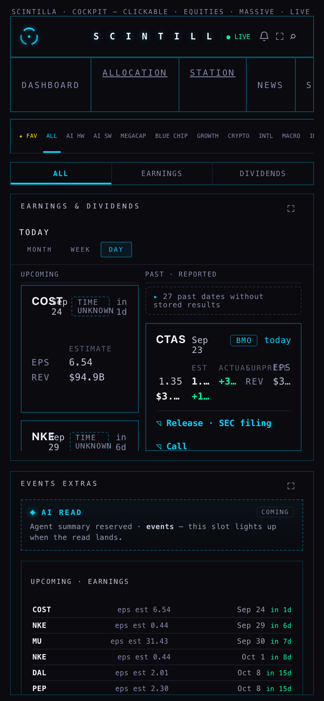

MONTH is the shape of the season, WEEK is the working view, DAY is the list you already have. Everything on the proposal page is now in the Hub itself, reading your real earnings table, and nothing that was in the section has been dropped. Nothing is deployed: branch hub/events-earnings-20260923, built from production a11b6b7. The ECONOMIC tab and the nudge were not touched.
“I cannot lose any information that I have. I think the best simple way is just a monthly view or the calendar views. Or a weekly view, that kind of situation, but a little bit of polish.”
Each one is a single word in the page, so you can change any of them in a minute. They all sit together at the top of the calendar's code.
| The question | What the proposal recommended | What I built | To change it |
|---|---|---|---|
| Month cell: load bar and top names, or pure heat? | The bar, with names | Load bar + the count + the three biggest names + “+N more” | ERC_MONTH_CELL = "HEAT" leaves the bar and the count alone |
| Which names get through on a 38-ticker day? | Biggest by market cap | Biggest first, using the market caps the board has already read — no extra request. A company with no stored size sorts last and is never treated as a zero | ERC_NAME_ORDER = "FAV" puts your favourites first, then size |
| Colour by cohort? | On | On. The dot is the cohort; the result (green beat, yellow in line, red miss) is the chip's edge and its number, so the two can never be read for each other. The legend under the view names only the cohorts actually on screen | ERC_COHORT_HUE = false leaves result colour only |
| Dividends: sub-tab or filter chip? | Kept exactly as-is | Untouched — still the third sub-tab beside ALL and EARNINGS, still saying it has no source wired | Say the word and it becomes a chip |
One more choice, which the proposal implies but does not ask: WEEK is what the tab opens on. The proposal calls it “the working view · where you actually live during a reporting season” and calls DAY “the drill-in”. If you would rather land on MONTH or DAY, that is one word too: ernSpan: "WEEK".

What that screenshot says: MON SEP 21 → SUN SEP 27 across the top with ◀ ▶ and TODAY, then one row per day. Monday has NO REPORTS. Tuesday carries CBRS under “TIME NOT SET · 1”. Wednesday — today — is tinted and carries CTAS +3.0% under “BEFORE THE OPEN · 1”, the surprise in green because it beat. Thursday carries COST. Friday, Saturday and Sunday are empty and say so. At the foot, the legend for the two cohorts on screen (BLUE, GROWTH) and the line “3 reports in this week · click a ticker for its card”.
The groups are the four the data actually has: before the open, at a set time (when the supplier gives a clock time), after the close, and time not set — which, as your proposal measured, is almost everything still to come. It is a group with its own heading, not an afterthought.


This is the week the month view sends you to. Monday 26th: 6 reporting. Tuesday 27th: 19. Wednesday 28th: 33, one of them (FDX) after the close, the other 32 with no time set — GOOGL, GOOG, MSFT, META, TSLA first because they are the biggest. Thursday 29th: 33, led by AAPL, AMZN, LLY. Friday 30th: 9, led by XOM, ABBV, CVX. The weekend says NO REPORTS. On the phone the same week reads down the screen, four or five chips a row, each one still big enough to hit with a thumb.


Clicking CBRS opens the card directly under Tuesday's row, with a × CLOSE at its corner, and the chip lights up so you can see which one is open. The card is not a new thing: it is the Hub's own earnings block, so it says TIME UNKNOWN, UNCONFIRMED, 1d ago, and “estimate · no result stored for this date” above EPS −0.21 and REV $210.2M. Everything that card can show — the release link, the transcript, the call, the summary and its source — comes with it, because the calendar reads the same columns the DAY view reads.

This is the picture your proposal was built around, and the number it named is really there: Wed 4 Nov carries 38, in red. Around it, 28 and 29 October carry 33 each, 5 Nov 24, 3 Nov 23, 27 Oct 19, 2 Nov 12. The load bar under each date fills in proportion to the heaviest day in view and changes colour with the load — cyan on a quiet day, orange from 12, red from 25. Then the three biggest names: 4 Nov gives GOOGL, CAT, ARM and +35 more; 29 Oct gives AAPL, AMZN, LLY and +30 more. Days from the neighbouring month are dimmed but kept, so the weeks stay whole, and clicking any day opens its week.

On the phone the month keeps its seven columns and loses only the report time inside a cell. The counts, the bars and the three names survive at 390px; the span controls wrap onto their own line under the date.



DAY is the list that is already in the Hub, with nothing changed: two independently scrolling columns, COST / NKE / MU upcoming with their estimates, CTAS today with EPS 1.35 → 1.39 +3.0% and REV +1.0%, KR and ADBE behind it with their Release / Transcript / Call / Summary links, and the quiet group at the top holding 27 past dates without stored results. The only new thing on it is the MONTH · WEEK · DAY control above it, which is how you get back out.
| Information | Where it lives now |
|---|---|
| EPS estimate / actual / surprise | The card, and the surprise is the colour on every chip and every name |
| Revenue estimate / actual / surprise | The card, second row of the same block |
| Report time (BMO / AMC) | WEEK groups by it; blank is its own “time not set” group; MONTH prints “open” or “close” beside a name when it is known |
| Press release link | The card's action row — dimmed “Release pending”, never hidden, when there is none |
| Release summary · release metrics · call link · AI call summary | The card, with the source of the text named (the provenance columns are read by the calendar too, so a card opened from a chip can never mislabel a summary) |
| Transcript | The card's button, shown only when a transcript really exists for that company and date |
| Company website / IR link · company releases | The extras column at the right, in every span, exactly as before |
| Dividends sub-tab | Untouched |
| Cohort scoping + ticker search | Kept, and now also colours every chip and every name. The same honest gate as the list: if the cohort map has not arrived, the view says so rather than showing an unscoped calendar |
| Past dates without stored results | Still their own quiet group in DAY, still counted, still not called “reported” |
The EARNINGS band you asked for this morning already knew how to say all of this, so the calendar uses its functions rather than writing its own: the week (Monday to Sunday), “before the open / after the close”, the order within a day, and the result with its surprise. One consequence you will see: both start the week on Monday, so the band's “WEEK OF SEP 21” and the calendar's “MON SEP 21 → SUN SEP 27” are the same seven days. If they ever disagree it will be because the data changed between two reads, never because they were written twice.
earnings_events — the EVENTS room's own table and columns — for the span on screen only, and keeps only the tickers in cohorts, the universe the room already filters by.GOOGL sits on both 28 Oct and 4 Nov, and GOOG on 28 Oct only — none of the three confirmed. The month view makes it visible because GOOGL appears in two different weeks. That is what storage holds; I have not touched it, and the calendar shows both rather than picking one.366 tests, 362 pass. 15 of them are new and pin these decisions: WEEK lands, the four choices are the proposal's, the calendar reuses the band's functions instead of redefining them, both views start on Monday, a month day hands off to its week, a chip opens the same card, a blank report time is a real group, the read is earnings_events and nothing is written, one read per span with a quiet re-read that does not move you, a missing size is said out loud rather than guessed, the ECONOMIC tab's state is untouched, and there is no white in the new styles.
The 2 failures are the two that already fail on production a11b6b7 — I ran the same suite in a clean worktree at that commit to be sure: xfeed-publish, and one age-formatting assertion on another surface. Neither is mine, and neither is in this tab.
hub/events-earnings-20260923, from origin/hub/release-20260923 @ a11b6b7.index.html. One test file added.